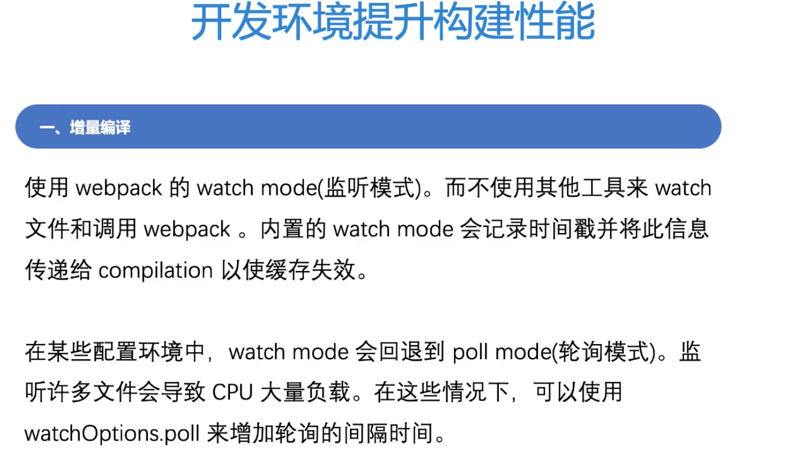
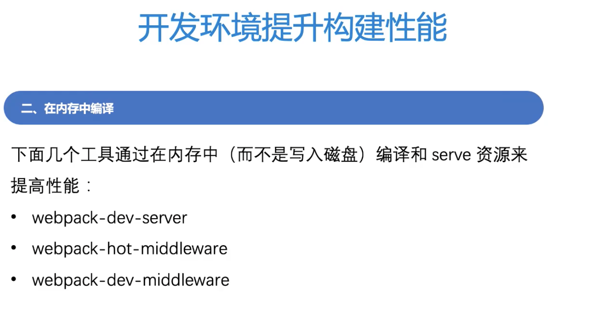
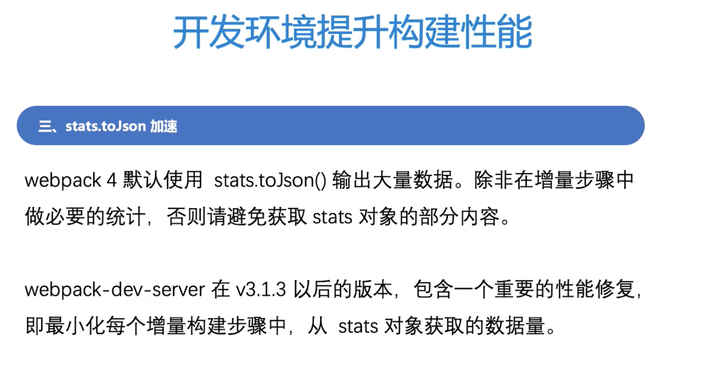
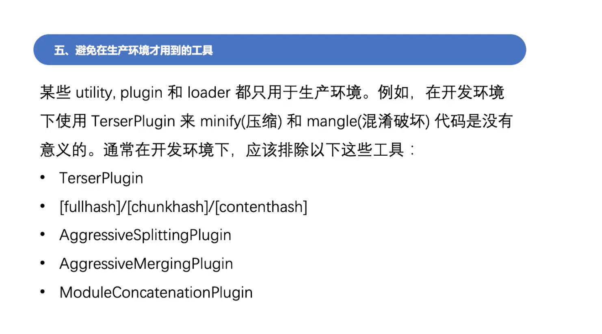
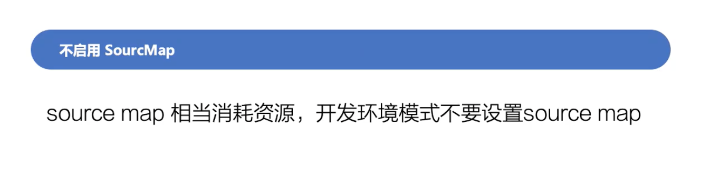

提升构建性能
webpack 性能提升优化分为两类
- 利用webpack 提升网站性能，例如网站首屏时间，受益者用户
- 开发性能: 提升打包速度，降低打包时间，受益者开发者
三个环境提升构建性能
- 通用环境
- 开发环境
- 生产环境
通用环境优化
- 更新到最新版本(webpack, Node.js, npm, yarn等)
- 将loader 应用于最少数量的必要模块，比如exclude掉不必要的文件
- 引导: 每个额外的loader/plugin 都有其启动时间，尽量少的使用工具
- 解析:

- 小即是快(smaller = faster):

- 持久化缓存:

- 自定义plugin/loader:
- progress plugin:

- Dll:

开发环境提升构建性能
增量编译

在内存中编译

stats.toJson 加速

Devtools

避免在生产环境才用到的工具

最小化entry chunk

避免额外的优化步骤

输出结果不携带路径信息

Node.js 版本 8.9.10-9.11.1

TypeScript Loader

生产环境提升构建性能
不启用source-map
